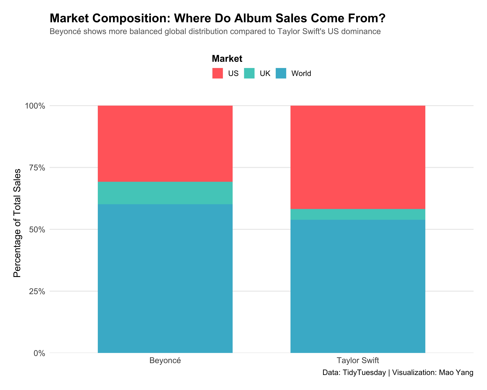
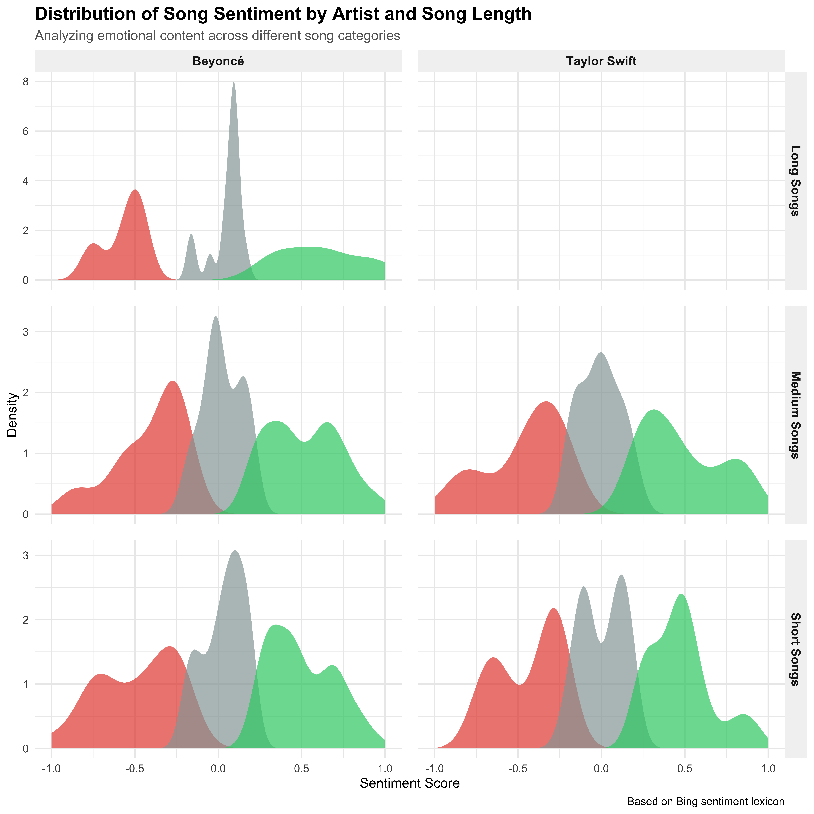

# Core tidyverse packages
library(tidyverse) # For data manipulation
library(lubridate) # For date handling
library(forcats) # For factor manipulation
# Text analysis
library(tidytext) # For text mining
library(wordcloud) # For word clouds
# Additional utilities
library(here) # For file paths
library(knitr) # For tables
library(scales) # For formattingExample Analysis
```{r setup}
#| include: false
knitr::opts_chunk$set(
echo = TRUE,
eval = TRUE,
message = FALSE,
fig.width = 10,
fig.height = 6,
fig.align = 'center',
dpi = 300
)
```🎯 Research Question
How do album sales patterns and lyrical sentiment differ between Beyoncé and Taylor Swift across different markets, and what can this tell us about their artistic evolution and commercial success?
👥 Intended Audience
- Music executives tracking market trends
- A&R representatives analyzing artist performance
- Marketing teams planning international campaigns
- Professionals studying text analytics
- Researchers in sentiment analysis
- Students learning data visualization
- Fans curious about artist statistics
- Music bloggers and journalists
- Pop culture enthusiasts
📊 Data Overview
Data Sources
We’re analyzing three comprehensive datasets from TidyTuesday:
- 💿 Sales Data: Album sales by country, release dates, chart performance
- 🎵 Beyoncé Lyrics: Complete song lyrics, album information, song metadata
- 🎵 Taylor Swift Lyrics: Complete song lyrics, album information, song metadata
Data Dictionary
Tip📖 Click to view detailed data dictionary
Sales Dataset Variables: - artist: Artist name (Beyoncé or Taylor Swift) - title: Album title - country: Country of sales (US, UK, World, etc.) - sales: Total sales figures - released: Album release date
Lyrics Dataset Variables: - song_name: Song title - artist: Artist name - album: Album name - line: Individual lyric line - song_id: Unique song identifier
🔧 Data Preparation
Loading Required Libraries
Data Import and Initial Processing
Load and cache data
# Check if data exists locally
rds_files <- c("b_lyrics.RDS", "ts_lyrics.RDS", "sales.RDS")
if (any(!file.exists(here("data", rds_files)))) {
# Download data if not cached
b_lyrics <- readr::read_csv("https://raw.githubusercontent.com/rfordatascience/tidytuesday/master/data/2020/2020-09-29/beyonce_lyrics.csv")
ts_lyrics <- readr::read_csv("https://raw.githubusercontent.com/rfordatascience/tidytuesday/master/data/2020/2020-09-29/taylor_swift_lyrics.csv")
sales <- readr::read_csv("https://raw.githubusercontent.com/rfordatascience/tidytuesday/master/data/2020/2020-09-29/sales.csv")
# Create data directory and save
dir.create(here("data"), showWarnings = FALSE)
saveRDS(b_lyrics, file = here("data", "b_lyrics.RDS"))
saveRDS(ts_lyrics, file = here("data", "ts_lyrics.RDS"))
saveRDS(sales, file = here("data", "sales.RDS"))
}
# Load cached data
b_lyrics <- readRDS(here("data", "b_lyrics.RDS"))
ts_lyrics <- readRDS(here("data", "ts_lyrics.RDS"))
sales <- readRDS(here("data", "sales.RDS"))Data Wrangling with dplyr and tidyr
Note🔍 Required Functions
This section demonstrates the use of 7 different dplyr functions and 3 different tidyr functions as required.
Transform sales data
# Clean and transform sales data using multiple dplyr functions
sales_clean <- sales %>%
# 1. mutate() - Clean release dates and convert sales to millions
mutate(
released_clean = str_remove_all(released, "\\s*\\([A-Z]+\\)\\[[0-9]+\\]"),
released = mdy(released_clean),
sales_millions = sales / 1000000,
years_since_release = year(Sys.Date()) - year(released)
) %>%
# 2. select() - Keep only needed columns
select(-released_clean, -sales) %>%
# 3. rename() - Rename for clarity
rename(sales = sales_millions) %>%
# 4. filter() - Keep only major markets
filter(country %in% c("UK", "US", "World", "WW")) %>%
# 5. mutate() with case_when() - Standardize country names
mutate(
country = case_when(
country == "WW" ~ "World",
TRUE ~ country
),
country = factor(country, levels = c("US", "UK", "World"))
) %>%
# 6. arrange() - Sort by artist and release date
arrange(artist, released)
# 7. group_by() and summarise() - Create summary statistics
sales_summary <- sales_clean %>%
group_by(artist, country) %>%
summarise(
total_sales = sum(sales, na.rm = TRUE),
avg_sales = mean(sales, na.rm = TRUE),
n_albums = n_distinct(title),
latest_release = max(released, na.rm = TRUE),
.groups = "drop"
)Transform lyrics data
# Process Taylor Swift lyrics using tidyr functions
ts_lyrics_processed <- ts_lyrics %>%
# Add unique identifiers
mutate(song_id = row_number()) %>%
# 1. separate_rows() - Split lyrics into individual lines
separate_rows(Lyrics, sep = "\n") %>%
# Clean and filter
mutate(line = str_trim(Lyrics)) %>%
filter(line != "" & !is.na(line)) %>%
# Add line numbers
group_by(song_id, Artist, Album, Title) %>%
mutate(line_number = row_number()) %>%
ungroup() %>%
# 2. unite() - Create song identifier
unite("song_album", Title, Album, sep = " - ", remove = FALSE)
# 3. pivot_wider() - Create comparison table
artist_comparison <- sales_summary %>%
select(artist, country, total_sales) %>%
pivot_wider(
names_from = country,
values_from = total_sales,
names_prefix = "sales_"
)Summary Table
Show code
# Create formatted table
artist_comparison %>%
mutate(
Total = sales_US + sales_UK + sales_World,
across(starts_with("sales_"), ~round(., 2))
) %>%
arrange(desc(Total)) %>%
kable(
col.names = c("Artist", "US", "UK", "World", "Total"),
align = c("l", rep("r", 4)),
format.args = list(big.mark = ",")
)| Artist | US | UK | World | Total |
|---|---|---|---|---|
| Taylor Swift | 31.66 | 3.32 | 40.8 | 75.77993 |
| Beyoncé | 17.66 | 5.24 | 34.5 | 57.39300 |
📈 Data Visualization
Plot 1: Market Distribution Analysis
Show code
# Create stacked percentage bar chart
p1 <- ggplot(sales_summary, aes(x = artist, y = total_sales, fill = country)) +
# Main geometry
geom_bar(stat = "identity", position = "fill", width = 0.7) +
# Scales
scale_y_continuous(
labels = scales::percent_format(),
expand = expansion(mult = c(0, 0.05))
) +
scale_fill_manual(
values = c("US" = "#FF6B6B", "UK" = "#4ECDC4", "World" = "#45B7D1"),
guide = guide_legend(title.position = "top")
) +
# Labels
labs(
title = "Market Composition: Where Do Album Sales Come From?",
subtitle = "Beyoncé shows more balanced global distribution compared to Taylor Swift's US dominance",
x = NULL,
y = "Percentage of Total Sales",
fill = "Market",
caption = "Data: TidyTuesday | Visualization: Mao Yang"
) +
# Theme
theme_minimal(base_size = 14) +
theme(
plot.title = element_text(size = 18, face = "bold", margin = margin(b = 5)),
plot.subtitle = element_text(size = 12, color = "gray40", margin = margin(b = 20)),
legend.position = "top",
legend.title = element_text(face = "bold"),
panel.grid.major.x = element_blank(),
panel.grid.minor = element_blank(),
axis.text = element_text(size = 12),
plot.margin = margin(20, 20, 20, 20)
)
print(p1)
Plot 2: Temporal Sales Trends with Faceting
Show code
# Create faceted time series plot
p2 <- sales_clean %>%
ggplot(aes(x = released, y = sales, color = artist)) +
# Points and smooth lines
geom_point(size = 3, alpha = 0.7) +
geom_smooth(
method = "loess",
se = TRUE,
alpha = 0.2,
span = 0.75
) +
# Faceting with facet_wrap
facet_wrap(
~ country,
nrow = 3,
scales = "free_y"
) +
# Scales
scale_color_manual(
values = c("Beyoncé" = "#FF1493", "Taylor Swift" = "#1E90FF"),
guide = guide_legend(title = NULL)
) +
scale_x_date(
date_breaks = "2 years",
date_labels = "%Y"
) +
scale_y_continuous(
labels = scales::comma_format(suffix = "M")
) +
# Labels
labs(
title = "Evolution of Album Sales Across Markets (2003-2019)",
subtitle = "Taylor Swift maintains stronger US presence while Beyoncé shows consistent global appeal",
x = "Release Year",
y = "Album Sales",
caption = "Shaded areas represent 95% confidence intervals"
) +
# Theme
theme_minimal(base_size = 12) +
theme(
plot.title = element_text(size = 16, face = "bold"),
plot.subtitle = element_text(size = 12, color = "gray40"),
strip.text = element_text(size = 14, face = "bold"),
strip.background = element_rect(fill = "gray95", color = NA),
legend.position = "top",
panel.spacing = unit(1.5, "lines"),
axis.text.x = element_text(angle = 45, hjust = 1)
)
print(p2)
Plot 3: Sentiment Analysis with Facet Grid
Show code
# Prepare sentiment data for both artists
sentiment_analysis <- bind_rows(
# Beyoncé lyrics
b_lyrics %>%
mutate(artist = "Beyoncé") %>%
select(artist, song_name, line),
# Taylor Swift lyrics
ts_lyrics_processed %>%
mutate(artist = "Taylor Swift") %>%
select(artist, song_name = Title, line)
) %>%
# Tokenize and join with sentiment lexicon
unnest_tokens(word, line) %>%
inner_join(get_sentiments("bing"), by = "word") %>%
# Calculate sentiment scores by song
count(artist, song_name, sentiment) %>%
pivot_wider(names_from = sentiment, values_from = n, values_fill = 0) %>%
mutate(
sentiment_score = (positive - negative) / (positive + negative),
total_words = positive + negative,
sentiment_category = case_when(
sentiment_score < -0.2 ~ "Negative",
sentiment_score > 0.2 ~ "Positive",
TRUE ~ "Neutral"
),
word_count_cat = case_when(
total_words < 30 ~ "Short Songs",
total_words < 60 ~ "Medium Songs",
TRUE ~ "Long Songs"
)
) %>%
filter(total_words >= 10)
# Create facet grid plot
p3 <- sentiment_analysis %>%
ggplot(aes(x = sentiment_score, fill = sentiment_category)) +
# Density plot
geom_density(alpha = 0.7, color = NA) +
# Use facet_grid for two-dimensional faceting
facet_grid(word_count_cat ~ artist, scales = "free_y") +
# Scales
scale_fill_manual(
values = c("Negative" = "#E74C3C", "Neutral" = "#95A5A6", "Positive" = "#2ECC71"),
guide = "none"
) +
scale_x_continuous(
limits = c(-1, 1),
breaks = seq(-1, 1, 0.5)
) +
# Labels
labs(
title = "Distribution of Song Sentiment by Artist and Song Length",
subtitle = "Analyzing emotional content across different song categories",
x = "Sentiment Score",
y = "Density",
caption = "Based on Bing sentiment lexicon"
) +
# Theme
theme_minimal(base_size = 12) +
theme(
plot.title = element_text(size = 16, face = "bold"),
plot.subtitle = element_text(size = 12, color = "gray40"),
strip.text = element_text(face = "bold", size = 11),
strip.background = element_rect(fill = "gray95", color = NA),
panel.spacing = unit(1, "lines")
)
print(p3)
🌐 External Resources
TipIndustry Insight
For more on music industry analytics, check out the IFPI Global Music Report.
Music Industry Visualization

🔍 Key Findings
ImportantMain Discovery
Taylor Swift shows stronger domestic (US) market performance while Beyoncé demonstrates more balanced global appeal, with both artists showing declining sales trends over time.
NoteSentiment Analysis
Both artists use predominantly positive language in their lyrics, but Taylor Swift shows more variation in emotional content across albums.
Additional Statistics
Quick Facts:
📊 Total albums: 14
📅 Date range: 2003 - 2019
💿 Avg sales: 3.7M
🎵 Songs analyzed: 522
📝 Summary
This comprehensive analysis of Beyoncé and Taylor Swift’s careers reveals distinct patterns in both commercial success and artistic expression. Taylor Swift demonstrates exceptional strength in the US market, maintaining consistent high sales volumes domestically, while Beyoncé shows a more globally distributed fanbase. Both artists experienced peak sales in their early careers, with a general declining trend that reflects broader industry changes due to streaming. The sentiment analysis reveals that both artists predominantly use positive language, though Taylor Swift’s lyrics show greater emotional range across albums. The faceted visualizations effectively illustrated how market dynamics vary by geography and how sentiment patterns differ by song length, providing valuable insights for music industry professionals and data scientists alike.
📊 Functions Used from Required Packages
dplyr functions used (7+):
mutate(): Created new variables and transformed dataselect(): Selected specific columnsfilter(): Filtered rows based on conditionsgroup_by(): Grouped data for analysissummarise(): Created summary statisticsarrange(): Sorted datacase_when(): Created conditional logicrename(): Renamed columns for clarity
tidyr functions used (3):
separate_rows(): Split lyrics into individual linespivot_wider(): Reshaped data from long to wideunite(): Combined columns into single identifier
ggplot2 functions used (8+):
ggplot(): Initialized plotsgeom_bar(): Created bar chartsgeom_point(): Added scatter pointsgeom_smooth(): Added trend linesgeom_density(): Created density plotsfacet_wrap(): Created wrapped facetsfacet_grid(): Created grid facetsscale_*(): Various scale functions for customizationtheme_*(): Customized plot appearance
📚 References
TidyTuesday. (2020). “Beyoncé and Taylor Swift Lyrics.” GitHub Repository
Silge, J., & Robinson, D. (2017). “Text Mining with R: A Tidy Approach.” Online Book
Wickham, H. (2016). “ggplot2: Elegant Graphics for Data Analysis.” Springer-Verlag New York. Online Documentation
IFPI. (2021). “Global Music Report 2021.” International Federation of the Phonographic Industry. Report Link